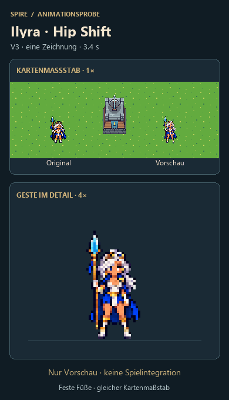

Ilyra · Hip Shift V3
Eine konsistente Zeichnung mit klarer Hüftverlagerung. Oben Kartenmaßstab, unten 4×-Detail.

GIF speichern · 3,4 sEine konsistente Zeichnung mit klarer Hüftverlagerung. Oben Kartenmaßstab, unten 4×-Detail.

GIF speichern · 3,4 s